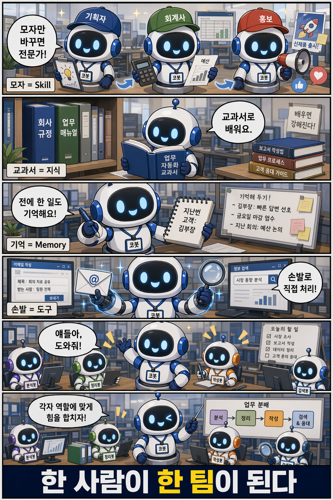

3부. 가르친다 — 코봇에게 능력을 단다

학습만화로 먼저 만나기 — 모자(Skill)·교과서(지식)·기억(Memory)·손발(도구)을 달아준다.
2부에서 우리는 코봇에게 '누구인가'를 가르쳤다. 어떤 환경에서 태어나, 어떤 지침을 따르며, 어떤 태도로 말하는지를 정해주었다. 그렇게 정체성을 갖춘 코봇은 제법 그럴듯한 동료처럼 보인다. 그러나 정체성만으로는 일이 끝나지 않는다. 사람으로 치면 인사기록카드와 직무 소개서까지는 갖췄으나, 손에 쥔 도구도 책상 위 자료도 아직 없는 첫 출근날의 신입과 같다.
이제부터 다룰 것은 화면 오른쪽의 능력 트레이다. 코봇 작성 화면을 열면 왼쪽에서 지침으로 정체성을 빚고, 오른쪽에서 능력을 하나씩 단다. 능력은 세 갈래다. 일하는 법을 가르치는 Skill(전문성), 참고할 자료를 쥐여주는 지식과 기억, 그리고 실제로 시스템을 움직이는 도구(손발)다. 이 세 가지가 정체성 위에 얹히는 순간, 말만 잘하던 챗봇은 일을 끝내는 직원으로 바뀐다.
네 능력의 경계
세 능력의 차이는 한 장면으로 또렷해진다. 사용자가 코봇에게 이렇게 말했다고 하자. "프로젝트 일정표를 만들어서 SharePoint에 올려줘." 한 문장이지만, 코봇이 이를 해내려면 서로 다른 능력 네 가지가 차례로 움직인다.
먼저 일정표의 '내용'을 짜는 일이 있다. 어떤 단계를 어떤 순서로 배치하고 기간을 어떻게 나눌지를 아는 전문성, 이것이 Skill이다. 일정설계자 Skill이 일정표 초안을 머릿속에서 만들어낸다. 그다음 코봇은 빈손으로 짓지 않는다. 회사의 표준 일정 템플릿과 지난 프로젝트 문서를 참고해 근거 위에서 작성하는데, 이렇게 읽어 인용하는 읽기 전용 자료가 Knowledge다. 초안이 완성되면 이제 행동할 차례다. 그 내용을 실제 .docx 파일로 만들어 SharePoint에 업로드하는 일, 곧 시스템을 직접 움직이는 손발이 Tool이다. 마지막으로 코봇은 "이 사용자는 금요일 보고를 선호한다"는 사실을 기억해 다음에는 묻지 않는데, 나에 대한 지속적인 맥락을 간직하는 것이 Memory다.
한 문장으로 줄이면 이렇다. Skill은 만드는 법, Knowledge는 참고 자료, Tool은 행동, Memory는 너를 기억하는 능력이다. 3부는 이 네 능력을 차례로 단다(9~11장). 그리고 능력을 다는 마지막 걸음으로, 혼자 다 짊어지던 코봇이 후배 전문가를 들여 팀을 이끌게 한다(12장 슈퍼호스트). 다만 종류와 한도가 제품 진화로 계속 늘어나는 부분 — 지식 소스의 전체 목록, 도구의 전체 종류, 부서별 스킬 갤러리 — 은 본문에 요지와 대표 예시만 두고, 망라형 목록은 부록 E "능력 카탈로그"로 넘긴다. 본문이 카탈로그에 잠식되지 않게 하기 위함이다.